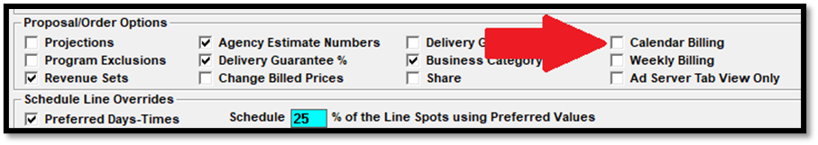
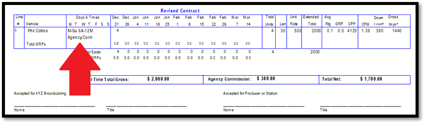

Podcast Setup
Traffic Site Options
Options Tab
In Traffic Site Options, on the Options tab, in the System Options section, there are two podcast related settings: Ad Server and Podcast Spots.
Ad Server: when checked on, the digital tab becomes activated on the Proposal and Order screens, so that digital lines can be added to contracts. This also enables the Podcast/Ad Server medium setting in Vehicle Options, the CPM field on the Rate Card screen, the CPM package screen, and the Ad Server Manual Posting screen.
Podcast Spots: when checked on, the system can be used with podcast spots. This also enables the Podcast/Ad Server medium setting in Vehicle Options.
Ad Server Tab View Only
This setting, in the Proposal/Order options section, will make the Digital tab view only. This is for systems that import podcast contracts from an external system, and cannot edit podcast contracts in Counterpoint. It is unchecked by default.
Calendar Billing
The Calendar Billing setting, on the Options tab, in the Proposal/Order section, can be checked on to allow contracts to be entered and billed using the Calendar billing cycle. Calendar billing is only allowed with contracts that contain Digital lines only (no air time or spots).

If both the standard broadcast calendar billing cycle and the calendar billing cycle will be used, the Billed and Booked report and RAB export can be run by “Bill Method” to gather data by both billing cycle methods, based on the billing cycle used for each relevant contract. For contracts on the standard broadcast billing cycle, the Bill Method will work like the standard broadcast calendar method, pulling data from contracts for unbilled periods, and from receivables/history for billed periods. For contracts on the calendar billing cycle, the calendar method will be used, with total line costs (for CPM and Flat Rate lines) averaged per month over the length of the line for lines that run for multiple months prior to invoicing, and after invoicing, CPM lines will use the billed amount for billed months, and the total line cost minus the total amount billed to determine the monthly amount for the remaining months (Flat Rate lines will always use the average monthly amount, where the flat rate cost is divided by the number of months to determine the monthly amount that is reported, both before and after invoicing).
Audience Tab
On the Audience Tab, the setting “Show ‘Impressions’ and ‘Download’ on Proposals/Orders” can be checked on, as shown in the picture below, to enable the “Show Impressions” feature in the contract header area and to enable the Impressions Research import (see later section).
Contract Tab
On the Contract tab, there are two podcast related settings: “Include Audience Percentages for Podcast” and “Show Audio Type”.
Include Audience Percentages for Podcast: This option sets the default setting for the "include audience % for podcast" checkbox on the proposals/contracts report and the contract snapshot. When the checkbox "Include aud % for podcast" is not checked on when running the proposals/contracts and snapshot reports, then any vehicles set to the Podcast/Ad Server medium type will exclude the average rating, GRP, and CPP. If there are vehicles with the medium type of Podcast/Ad Server, and the contract report is typically run with the intention of excluding the average rating, GRP, and CPP, then this should not be checked on. (Note that this only sets the default, which can be changed when running the report if needed.)
Show Audio Type: When checked on, this will make the audio type appear for spot buys on the Proposals/Contracts report, Insertion Orders, and Invoices when the vehicle Medium Type is set to Podcast/Ad Server in the Traffic Vehicle List screen->Options->General tab. (Audio Types are defined in the Proposal/Order screen Override Audio Type box by contract line.) The choices are:
- LC: Live commercial
- LP: Live promo
- RP: Agency promo
- PC: Pre-recorded commercial
- PP: Pre-recorded promo
- RC: Agency commercial
Note: the promo copy options are only available if "using promo copy with schedule lines" is enabled in the Traffic Site Options->Copy tab.
Contract report example showing the audio type.

Invoice example (below) showing the audio type.
Invoice Tab
On the Invoice tab, the setting “Bill Over-Delivered CPM Impressions” determines how the invoice program handles impressions over the impression goal for a CPM Price Type digital line.

When “Bill Over-Delivered CPM Impressions” is not checked on, only impressions up to the impression goal for a line will be invoiced. For example, if the impression goal was 50,000, and 60,000 were achieved, a maximum of 50,000 impressions would be invoiced.
When “Bill Over-Delivered CPM Impressions” is checked on, then impressions that are achieved that are greater than the impression goal for the line will also be invoiced. For example, if the impression goal was 100,000, and 120,000 impressions were achieved, the full 120,000 impressions would be invoiced.
User Options
The following user permissions on the User Options screen determine which Podcast/Ad Server related screens users can access.
To access the Ad Server Items screen, set access permissions on List -> Ad Server Items.
To access the Proposal or Orders screen, set access on Jobs -> Proposal and Order.
To access the Ad Server Manual Posting screen, set access on Jobs -> Post Log.
Vehicle Options
General Tab
Medium Podcast
Podcasts are not a separate vehicle type, instead, they are defined as a “Medium” type on the Vehicle Options screen, on the General tab, by selecting the “Podcast/Ad Server” radio button, as shown in the picture below.
When a vehicle is set to the Medium type of “Podcast/Ad Server”, then the audio type of “recorded commercial” becomes “agency commercial”. The podcast medium type setting also works with the “show audio type” Site Options setting to output the audio type on the contract report, snapshot report, insertion orders, and invoices. It also enables the Ad Server Vendor dropdown that also appears on the Vehicle Options General tab, for configuring the Ad Server used with that vehicle. Vehicles set to the Medium type of “Podcast/Ad Server” are also italicized when shown in the vehicle list box on the Proposal and Order screen.
If a vehicle is not set to the Podcast/Ad Server Medium type, and there are air time lines referencing it, the Podcast/Ad Server radio button will grayed out. If a vehicle is set to the Podcast/Ad Server Medium type, and there are line or Ad Server lines referencing it, then the it cannot be changed from the Podcast/Ad Server medium type. If the Medium type in either case needs to change, a new vehicle should be entered instead.
Vehicles set to the medium type of Podcast/Ad Server have the following results on the Proposals/Contracts report and the contract snapshot report:
- If a contract spot line is shown on the report, and the vehicle has the medium set to Podcast/Ad Server, then the average rating, GRP, and CPP will be suppressed from the detail page, and the GRP and CPP will be suppressed from the summary page.
- If there's a spot package, and the hidden lines are not shown on the report (because the "hidden" checkbox is not checked on the report selectivity screen), and the hidden lines are all set to the Podcast/Ad Server medium type, then the average rating, GRP, and CPP will be suppressed from the package line.
- If there's a package with a mix of Podcast and non-Podcast lines, the package line will show the average rating, GRP, and CPP (on the detail page), and the GRP and CPP (on the summary page). If the hidden lines are shown for this report, any podcast lines will have the average rating, GRP, and CPP suppressed.
Ad Server Vendor
On the General tab, the Ad Server Vendor field is used to define which Ad Server will be used with this vehicle. (A Counterpoint keycode is required to update this field.)

A single vehicle can only be set to a single Ad Server. This field is only available for vehicles set to the Podcast/Ad Server medium type.
When double-clicking an Ad Server vendor or when selecting New from the dropdown and pressing Tab, the Ad Server Vendor sub-screen will be shown. This screen is used for configuring connection info for the Ad Server.

Vendor Name: the name of the Ad Server, such as Megaphone, AdsWizz, etc.
Vendor Abbreviation: the abbreviation of the Ad Server, for use when there’s not enough room to display the full Ad Server name.
Vendor User Name and Password: enter the user name and password used to connect to the Ad Server API.
Export Method: determines how contract lines will be added to the Ad Server. The available options are Manual, Automatic, and Unnecessary. With Manual and Unnecessary, the contract information will be manually entered in the Ad Server. With Automatic, the Ad Server API will be used.
Import Method: determines how impressions delivered will be retrieved from the Ad Server. The available options are Manual, Automatic, and Unnecessary. With Manual and Unnecessary, the aired impressions will be manually entered in Counterpoint on the Manual Posting screen. With Automatic, the Ad Server API will be used to retrieve aired impressions.
API Contract, API Spots Export, API Spots Import, API CPM Import, Download Address: under development.
Priority Start Number and End Number: when setting up an Ad Server, enter the starting and ending priority number range in these two fields. For example, if 1 through 5 is defined, like in the picture above, the available priority choices will be 1, 2, 3, 4, and 5.
Position: the position values for the selected Ad Server are entered on the Position screen.
Ad Server Vendor Name
The Ad Server Vendor Name field is not currently used.
On Invoices Show Air Date as “Week of Date”
On the General tab, the “On Invoices Show Air Date as” setting can be set to “Week of Date” to make the invoice show the week a podcast spot aired rather than the exact date.
Invoice example showing “Week of Dates” for podcast spots.
Ad Server Items
The Ad Server Items List screen is used to configure and view the targeting categories and items for Ad Server targeting.
The Category list appears at the top of the screen. A Category is a broad targeting category, such as Country, Device, Tags, etc. The item list shows the items within that category. For example, if the Category is Device, the Items might be iOS, Android, Smart Speakers. The API Code field is used to enter the API information for the category/item.
To define a new Category, select “New” from the Category dropdown, and then enter the new Category name on the Category screen and press Save.
To define new Items, first select the Category the Item belongs to, then select “New” from the Item dropdown list and then press Tab. Type in the item name in the Item Name field, then the matching API code for the Ad Server, then press Save.
Future enhancement: The Import button will be available to use the Ad Server API to update targeting categories.